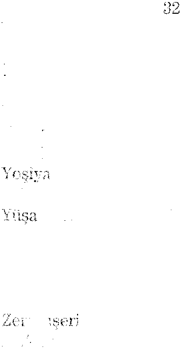

23-:24-3 1-33-35-39-44-56-58-59-89
- Ş -
Şehira
38-39-40-61 -63-85
Şekem
57
Şemseddin Sami
66
Şemun
64-67-68
Şii
15
Şilo
23-51 -52-58
- T -
Taberi
76
Tabı1t
12-13-64-65-66-67-68-69-70-71-72-73-7 4-76-77-78-80-82-83-89-90
Talmud
31
Tfilı1t
64-76-82-90
Tapınak
28-33-34-45-53-61
Tapınak Dağı
45
Tapınakçılar
34-35
Tebah
18
Templer
33
Tevrat
28-32-52-55-58-62-64-65-66-68-70-7 4-77-80-82-86-87-88-90
Tih Çölü
29
Titus
45
Tora
18-25
Tsadok
55
- U -
Ubade b. Samit
71
Useyd
81
Uzza
44
Uzziel
27

Ahid Swıdığı + 129
- Ü -
Ürdün
23-3 1
- V -
Vehb b . Münebbih
77
- Y -
Yahucla